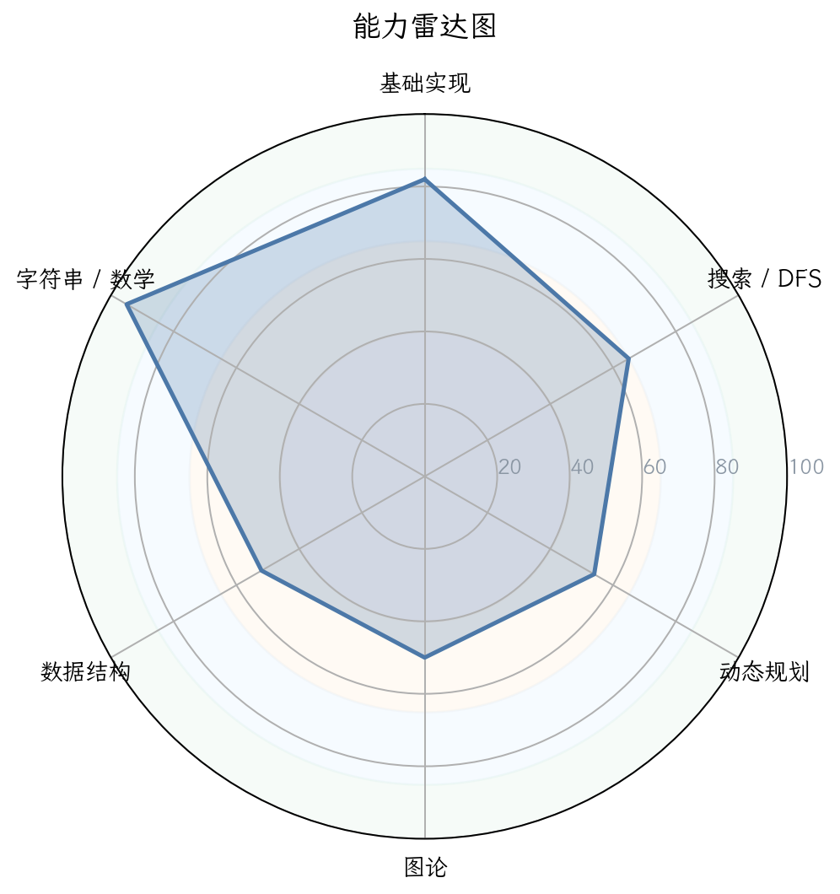
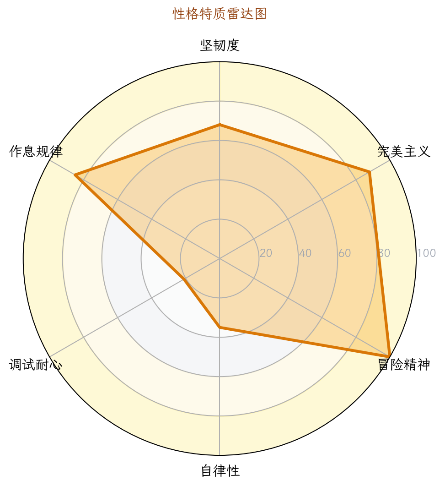
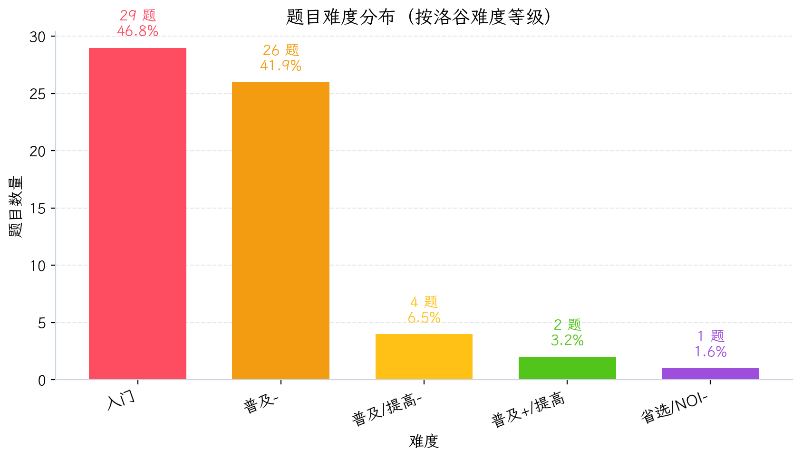
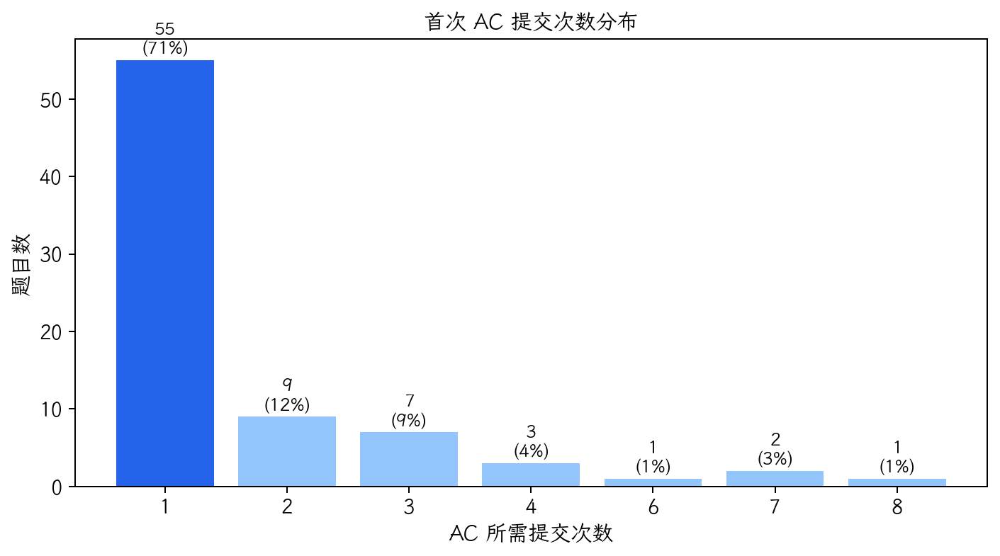
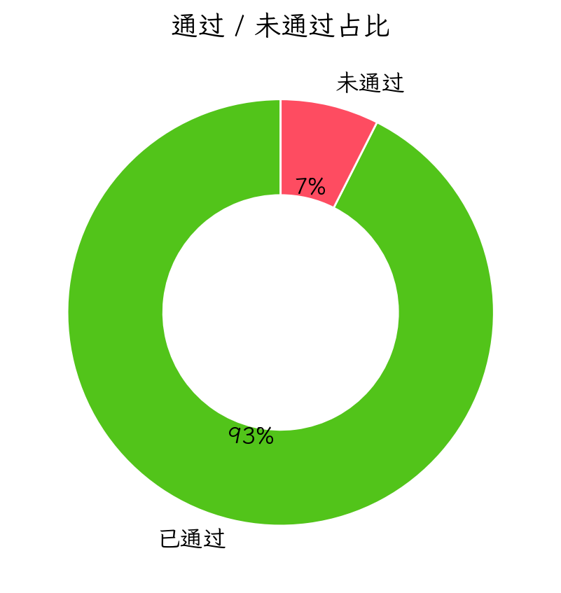
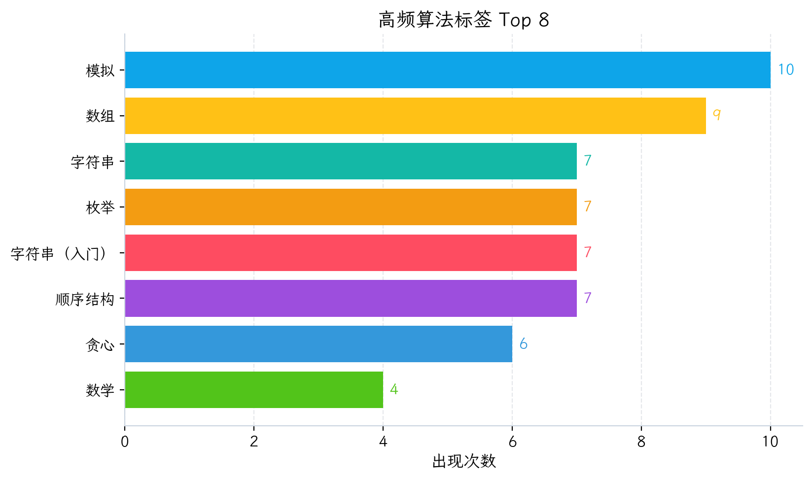

图 1：能力雷达图

图 2：性格画像雷达图

图 3：题目难度分布

图 4：首次 AC 提交次数分布

图 5：通过/未通过占比

图 6：高频算法标签 Top 8
| 洛谷难度 | 题数 | 占比 | 分布图 |
|---|---|---|---|
| 入门 | 29 | 46.8% | 46.8% |
| 普及- | 26 | 41.9% | 41.9% |
| 普及/提高- | 4 | 6.5% | 6.5% |
| 普及+/提高 | 2 | 3.2% | 3.2% |
| 提高+/省选- | 0 | 0.0% | 0.0% |
| 省选/NOI- | 1 | 1.6% | 1.6% |
| NOI/NOI+/CTSC | 0 | 0.0% | 0.0% |
| 级别 | 已覆盖/总数 | 覆盖率 | 详细情况 |
|---|---|---|---|
| 入门 | 15/28 | 53.6% | 🟢0项 🟡1项 🟠4项 🔵10项 🔴13项 |
| 提高 | 5/50 | 10.0% | 🟢0项 🟡0项 🟠0项 🔵5项 🔴45项 |
| 省选 | 0/10 | 0.0% | 🟢0项 🟡0项 🟠0项 🔵0项 🔴10项 |
| NOI | 1/43 | 2.3% | 🟢0项 🟡0项 🟠0项 🔵1项 🔴42项 |
好的，金牌教练收到。这是一份为你量身定制的深度诊断报告。请仔细阅读，这不仅是一份分析，更是你未来半年突破的作战地图。
P26-06-04 21:19 分析对象：一位处于入门/普及阶段的潜力选手
基于你的提交行为数据，我描绘出你的“竞赛人格”如下：
| 特质 | 评分 | 数据支撑 | 教练点评 |
|---|---|---|---|
| 坚韧度 | ★★★★★4/5 | 卡题6道，死磕题目最高提交28次。 | “死磕型”选手。不轻易放弃，这是成为高手的重要品质。但要注意，死磕不等于低效的瞎磕，需要学会“战略性放弃”和“带着问题去复盘”。 |
| 完美主义 | ★★★★★3/5 | 一次AC率 61.1%，AC率 42.1%。 | 有一定追求，但还有提升空间。近40%的题需要多次提交才过，说明在思考全面性和细节处理上，可以更“吹毛求疵”一些。 |
| 冒险精神 | ★★★★★4/5 | WA后重交间隔中位数65秒，1分钟内重交占比45.7%。 | “直觉驱动型”选手。你有很强的试错冲动，这是双刃剑。好处是能快速验证想法，坏处是容易陷入“改了交、交了改”的冲动调试循环。要学会“先冷静分析，再动手修改”。 |
| 自律性 | ★★★★★3/5 | 活跃天数38/145天，最大连续训练4天。 | 训练节奏偏向“周末突击型”（周末提交占61.8%）。自律性尚可，但缺乏持续稳定的日常投入。竞赛能力的提升靠的是细水长流，而不是一曝十寒。 |
| 调试耐心 | ★★★★★2/5 | 卡题6道，死磕题目多次提交未果，且代码出现恶搞性内容。 | 这是当前最大的短板。在遇到无法通过的测试点时，容易心态失衡，出现“胡乱改代码”、“提交恶搞代码”等行为。这是需要立刻纠正的坏习惯。 |
| 作息规律 | ★★★★★4/5 | 提交峰值在20:00，凌晨0-5点无提交。 | 作息健康，大脑活跃期在傍晚和晚上，符合大多数竞赛选手的生物钟。周末精力旺盛，应好好利用。 |
特征：你是一个有韧性、有冲劲，但稍显急躁的“潜力股”。你的知识结构有“偏科”现象，模拟、字符串等基础打得不错，但数据结构、图论、DP等核心模块存在明显缺口。目前的训练方式以“舒适区”内的刷题为主，缺乏对薄弱环节的定向突破。我们需要把“死磕”的精神，用在攻克知识盲区上。
| 排名 | 题号 | 题目名称 | 提交次数 | 未AC原因分析 |
|---|---|---|---|---|
| 1 | U667376 | 树路径权值乘积和 | 28 | 代码逻辑复杂，涉及树链剖分/DFS序+线段树，已超出目前知识范围。 |
| 2 | U671314 | 宇宙终极质因数分解 | 11 | 涉及大数分解 (Pollard Rho)，属于NOI级别算法，远超能力。 |
| 3 | P14571 | 「LAOI-11」Ice Block | 5 | 代码为恶搞（无限递归），说明没有正确理解题意或完全放弃思考。 |
| 4 | P1039 | [NOIP 2003 提高组] 侦探推理 | 5 | 复杂模拟+逻辑推理题，代码量大，逻辑分支多，容易在细节上出错。 |
| 5 | P1582 | 倒水 | 4 | 代码不完整，仅写了个输入框架。涉及位运算与贪心，是普及组的好题。 |
| 6 | P11790 | [JOI 2017 Final] 焚风现象 | 2 | 代码为另一道题的模板，属于“交错了”。 |
特征：你的“死磕”带有很大盲目性。U667376和U671314完全超出了你当前的能力范围，耗时在这里是无效的。P1039和P1582才是在你“最近发展区”内需要攻克的好题。这说明你缺乏“题目难度辨别”和“赛时决策”的能力。
建议：养成“提交前自测”的习惯。写完代码后，花1-2分钟构建几个特殊边界数据（n=1, 最大值, 最小值, 重复数据等）在脑子里跑一遍，将能极大提高一次AC率。
根据你的通过题目的难度分布：
| 难度名称 | 通过题数 | 占比 | 研判 |
|---|---|---|---|
| 入门 | 29 | 46.8% | 主阵地。说明你已掌握C++基础语法和最简单的逻辑。 |
| 普及- | 26 | 41.9% | 舒适区。模拟、枚举、简单字符串、小学数学题能比较轻松地完成。 |
| 普及/提高- | 4 | 6.5% | 正在突破。开始接触一些需要思考的题目，但题量较少。 |
| 普及+/提高 | 2 | 3.2% | 偶尔试探。证明你尝试过但未能稳定通过这个级别的题目。 |
| 省选/NOI- | 1 | 1.6% | 意外闯入。可能是通过某道特定的题目，不具代表性。 |
综合结论: 你目前稳定在 【普及- ~ 普及/提高-】 水平，正向 【普及+/提高】 发起冲击。这是一个关键的分水岭，大部分选手会在此遇到第一个瓶颈——即从“会写代码”到“会设计算法”的转变。
| 能力块 | 评分 | 当前等级 | 数据证据 | 已经具备 |
|---|---|---|---|---|
| 基础算法 | 95 | 🟢精通 | 熟练运用模拟、枚举、贪心、二分、前缀和等。 | 清晰理解算法流程，能独立AC大部分普及-及以下题目。 |
| 字符串 | 86 | 🟢精通 | 刷过较多入门和普及-字符串题。 | 掌握输入输出、常用函数、简单模式匹配（非KMP）。 |
| 数学 | 52 | 🟠入门 | 接触过进制、数论、gcd等，但题量少且深度不足。 | 基础算术好，但对数论、组合数学等竞赛数学非常陌生。 |
| 动态规划 | 49 | 🟠入门 | 只做过2道DP题（含一道状压DP，很可能只是套模板）。 | 理解了“状态”和“转移”的基本概念，但非常薄弱。 |
| 数据结构 | 42 | 🔵初窥 | 仅零星使用了栈、队列、bitset、树状数组。 | 对线性结构有感觉，但对树形结构、复杂数据结构毫无概念。 |
| 图论 | 36 | 🔴薄弱 | 图论相关题AC数为0。 | 完全空白。这是目前最大的知识黑洞。 |
核心诊断：你的能力呈现严重的“头重脚轻”。基础算法和字符串非常扎实，这是你的优势。但数据结构、图论、动态规划这“三座大山”几乎是空白，这直接导致你无法攻克普及+/提高难度的任何题目。你的训练策略是典型的“偏科生”策略。
CSP-J (入门级) 待完善 / 初入 CSP-S (提高级)
你虽然刷了一些题，但覆盖的知识点远未达到CSP-J的全面要求。特别是图论、树等核心知识完全缺失。距离CSP-S还有很长的路要走。
| 维度 | 最强项 (🟢) | 最弱项 (🔴) |
|---|---|---|
| 知识点 | 1. 模拟法 (10题) 2. 枚举法 (7题) 3. 字符串 (7题) |
1. 图论 (0题: 最短路、最小生成树、拓扑排序等) 2. 数据结构 (0题: 线段树、并查集, 几乎全白) 3. 动态规划 (浅尝辄止: 背包、树形DP、多维DP均无) |
| 级别 | 总知识点 | 已覆盖（有题记录） | 覆盖率 | 状态 |
|---|---|---|---|---|
| CSP-J (入门级) | 28 | 15 | 53.6% | 解读：超过一半的知识点你只是“碰过”，远谈不上精通。BFS、图遍历、背包DP、二叉树遍历等核心考点一片空白。 |
| CSP-S (提高级) | 50 | 5 | 10.0% | 解读：仅有5个知识点有记录，且都是“初窥”级别。整个提高级知识体系对你而言几乎是全新的世界。 |
| 省选级 / NOI级 | 53 | 1 (计算几何) | 1.9% | 解读：不必关注。现阶段专注于打好基础。 |
| 题目来源/级别 | 通过题数 | 说明 |
|---|---|---|
| CSP-J / 入门-普及 | 60+ | 主要阵地 |
| CSP-S / 普及+-提高+ | 2 (P1561, P1034) | 尝试成功，证明你有挑战更高难度的潜能。 |
| NOIP 提高组 | 1 (P1012) | 这是一道经典的普及-排序题，划为NOIP提高组纯属历史原因 |
| CSP-S/NOIP 提高 (未通过) | 1 (P1039) | 尝试失败，说明逻辑复杂度和代码量超出当前能力。 |
结论：你的绝大部分经历停留在“入门-普及”赛场，从未在真正的“提高级”赛场证明过自己。
| 优先级 | 风险项 | 触发场景 | 比赛症状 | 根因判断 | 训练专题 | 验收标准 |
|---|---|---|---|---|---|---|
| S（高/立即处理） | 数据结构/图论零基础 | 遇到需要建图、维护集合、区间查询的题 | 完全看不懂题，无思路，直接放弃。 | 从未系统学习过图论和基础数据结构。 | ①并查集②最短路(堆优化Dijkstra)③最小生成树(Kruskal) ④线段树(单点修改，区间查询)。 | 能独立AC 20道专项练习题，并能清晰口述算法流程。 |
| S（高/立即处理） | DP 思维未建立 | 遇到“最优方案”、“计数”、“可行性”类问题 | 只能用DFS暴力，爆搜后TLE，不会优化。 | 缺乏从“搜索”到“DP”的思维跃迁训练。 | ①记忆化搜索 ②线性DP (最长上升子序列) ③背包问题(01,完全) ④区间DP。 | 看到一道题，能主动思考“能否用DP?”并有能力定义出简单的状态和转移。 |
| A（中/近期处理） | 冲动调试与情绪失控 | 提交连续WA，找不到bug | 心态崩盘，胡乱修改代码，甚至写恶搞代码，白白浪费时间。 | 缺乏系统性的debug流程和方法论。 | ①学习“输出中间变量”②学习“对拍” ③制定“冷静期”规则 (如:连续WA 3次后，必须离开座位5分钟)。 | 在非比赛中，卡题超过15分钟后，能主动开启“输出-分析-定位-修改”的冷静调试流程。 |
| A（中/近期处理） | 代码风格与工程习惯 | 写超过50行的代码 | 变量命名混乱，没有注释，函数重用性差，容易越改越乱。 | 没有形成良好的代码规范。 | ①学习使用有意义的变量名 ②养成写关键注释的习惯 ③学会模块化编程(函数拆分)。 | 从你现在通过的代码中，随机抽取一条超过30行的，能让你之外的另一个人轻松看懂。 |
| B（低/可后置） | 知识覆盖面窄 | 比赛出现非模拟、非枚举类题目 | 除了暴力，想不到标准算法。 | 刷题太偏向舒适区，知识体系有巨大漏洞。 | ①系统过一遍CSP-J考纲 ②针对每个知识点完成至少3-5道入门题。 | 自信心提升，看到任何CSP-J范围内的题，都能立刻想到对应的知识点。 |
优先级说明：S（高/立即处理） · A（中/近期处理） · B（低/可后置）。
作为一名“资深架构师”，我看了一下你近期的代码，有亮点，但问题也很突出。
main 函数、头文件、using namespace std 等基本要素完备。在P1561和P1012中，使用了结构体、vector、sort 和自定义比较函数，说明已经具备一定的模块化编程意识。// 约翰逊规则比较函数），这说明你在写复杂逻辑时，有意识地通过注释来整理思路，这是非常好的习惯。⚠️ 高风险) : 你92.5%的提交使用 cin/cout，但只有1.5%的代码开启了 ios::sync_with_stdio(false); cin.tie(0);。这是致命伤！在CSP-S/NOIP比赛中，大量的输入数据会直接让你的程序因IO过慢而 TLE (超时)。cin/cout 的代码，第一行必须是 ios::sync_with_stdio(0); cin.tie(0); cout.tie(0);。无此句，不提交。中风险): 高频变量 a, b, u, v, w, N, M 充斥代码。在写简单题时没问题，一旦题目复杂度上升，10个变量后你根本分不清 u 是代表节点还是重量。这极大增加了出Bug的风险和调试时间。nodeCount, edgeWeight, currentTime, totalCost。即使多打几个字，也远比未来花半小时debug要划算。中风险): 你 #define int long long 的使用率只有1.5%，这在普及组并不致命。但在P14571的失败代码中，你写出了无限递归的恶搞代码，这比任何技术错误都更严重。它表明你在面对困境时，放弃了思考和解决问题的努力。这份计划的目标是：半年内，稳定通过普及+/提高难度的题目，为冲刺CSP-S打好基础。
🔴 紧急:
1. 开启 ios::sync_with_stdio 时代: 从现在起，你99%的代码都要加上它。我会在你的下一次提交中检查。
2. 系统学习BFS和并查集: 这是连通块、最短路径等问题的基础，是目前最短缺的技能。
🟡 重要: 3. 建立DP思维: 从 [P1048 [NOIP2005 普及组] 采药] 开始，先用暴力搜索写，然后思考如何用DP优化。这个过程是通往高手之路的必经关卡。 4. 砍掉无效死磕: 一道题思考30分钟无任何进展，立刻看题解，理解后自己重写，并记录下卡住你的关键点。 5. 规范代码习惯: 为自定义函数写注释，变量名要有意义。这是对自己和未来队友负责。
🟢 建议: 6. 制定周计划: 工作日每天1-2题，周末每天3-5题。保持思维的连续性。 7. 学习复盘: 每做完一道有价值的题，花5分钟思考：它用了什么模型？和之前做过的哪道题类似？我是否错过了关键性质？ 8. 管理情绪: 提交恶搞代码和冲动修改是弱者的表现。强者在卡题时，会喝口水，深呼吸，然后拿出草稿纸重新推演。
k，使得 N 加上 k 后，其二进制表示中 1 的个数不超过 K。N 开始，枚举 k = 0, 1, 2, ...，对于每一个 N+k，检查它能否被合并成不超过 K 个瓶子。x 的瓶子合并成一个 2x 的瓶子。这个过程其实就是计算 N+k 的二进制表示中有多少个 1。例如 13 (1101) 有3个1，代表它最终可以变成 8+4+1 三个瓶子。O(k * log(N+k))。k 最大可能到 2^31，显然会超时。k，效率太低。我们需要直接算出最小的合法 N+k。1 的个数（记为 popcount(N+k)）。popcount(N+k) ≤ K 的最小的 k（即大于等于N的最小数）。N 开始，不断加上一个数，直到它的 popcount 不超过 K。最直接的方法不再是枚举所有数，而是利用位运算来“修补”二进制。N 开始。cur = N + k 的 popcount。popcount(cur) <= K，则 k 即为答案，结束。popcount。通过增加k，使得 cur 中最低位的 1 进位。例如 cur = ...1001000，我们加上 ...0001000 使其变成 ...1010000。这相当于把一堆低位的 1 合并成一个高位的 1。代码上，就是找到 cur 的最低位的 1 的位置 lowbit = cur & -cur，然后令 k += lowbit，并继续检查新的 cur。cpp
int n, k, ans = 0;
cin >> n >> k;
int cur = n;
while (__builtin_popcount(cur) > k) { // 也可以用自写函数算
int lowbit = cur & -cur; // 获取最低位的1
ans += lowbit; // 答案增加
cur += lowbit; // 补上这个数，触发进位
}
cout << ans << endl;A-B 数对 (哈希表/双指针，虽然不直接相关，但同样考察了“如何从暴力转化为更高效”的思维过程)。小 C 的数组 (同样是位运算性质的题目，通过观察二进制性质来简化问题)。[GESP202503 五级] 原根判断a 和 p，暴力枚举 i = 1 到 p-2，看 a^i mod p 是否都为1？显然，这不对。a 是模 p 的原根，当且仅当 a^(p-1) ≡ 1 (mod p)，且对于 p-1 的任意真因数 d (1 ≤ d < p-1)，有 a^d ≢ 1 (mod p)。p-1 的所有因数 d（除了 p-1 本身），逐个用快速幂检查，如果有一个为1，则不是原根。复杂度：O(divisors * log(p))。find_yin 函数只加入了 i 和 x/i，但 x 可能是平方数，sqrt(x) 会被加入两次。另外，你需要枚举所有因数，不仅仅是质因数。fun 函数中：for(int i = 1; i <= yin.size(); i++) 数组索引从1开始，而 vector 下标从0开始！这会导致 yin[yin.size()] 数组越界，引发错误。p-1 的 所有质因数 q。因为如果一个数 d 使得 a^d ≡ 1，那么 d 的倍数也会。因此只需检查最小的“模数”，即 (p-1)/q。p-1 的所有质因数。a^(p-1) % p == 1。不是则直接 false。q，计算 a^((p-1)/q) % p，如果等于1，直接返回 false。[NOI1995] 极值问题 (数论+递归，加深对模运算和因数概念的理解)。【模板】有理数取余 (扩展欧几里得 / 快速幂，是数论基础中的基础)。教练寄语：这份报告的数据很真实，你的问题也很典型。从今天起，忘掉“AC率”，牢记“知识体系”。按我的计划走，半年后，你会感谢现在这个愿意直面问题，并开始改变的自己。